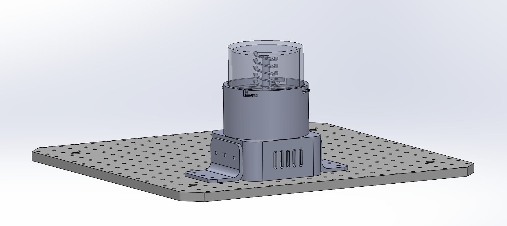
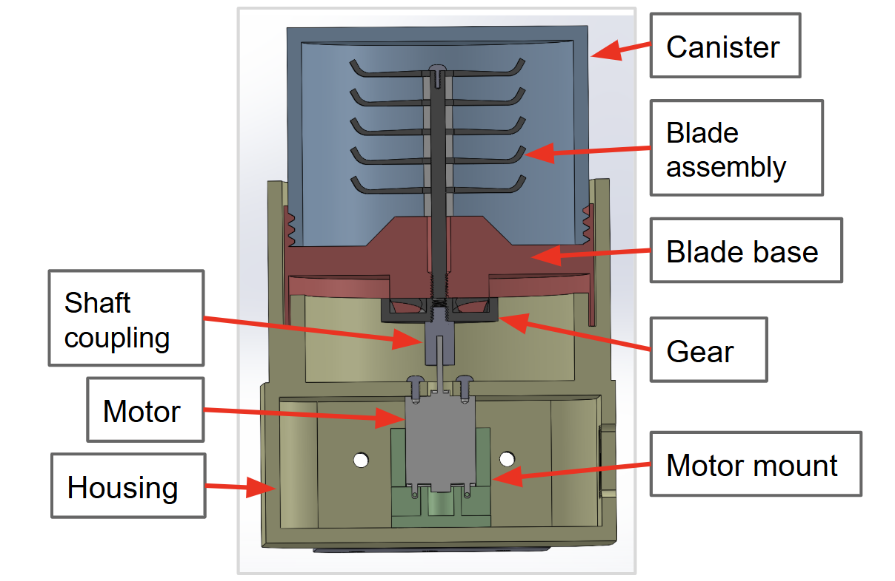
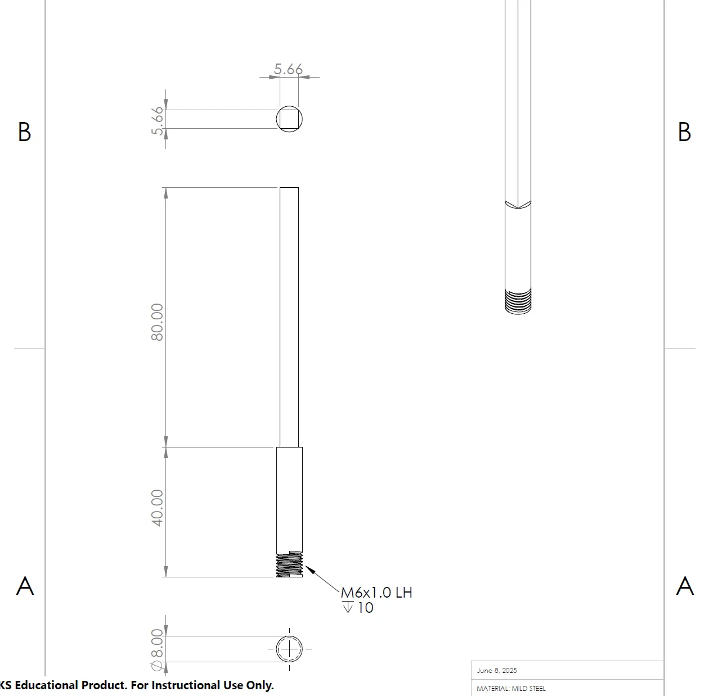
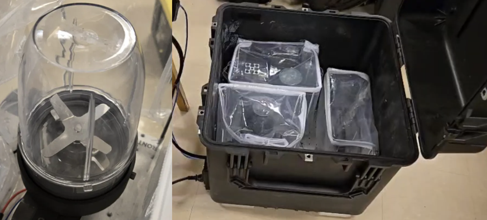
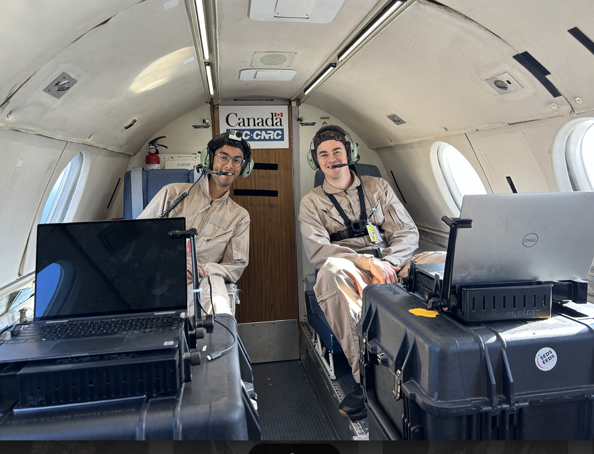

Lunar Regolith Blade Mill

Project Overview
As a part of my research work with the Laboratory of Emerging Energy Research (LEER) at the University of Waterloo, I was responsible for designing a blade mill for processing of lunar regolith. In November 2025, we were able to flight test the blade mill with regolith simulant in lunar gravity conditions during a parabolic flight.
This project was led by Connor MacRobbie and supervised by Dr. John Wen. A paper based on the project is currently under review and should be published in fall 2026, with an additional one to hopefully follow afterwards!
Design
The unique constraints imposed by the low gravity environment on the moon influenced many of my design choices for the blade mill. For example, I had to find a way to ensure that regolith particles floating in the milling chamber would experience sufficient agitation to encounter the blades.
Initially, I considered a design with a single blade mounted on a linear actuator, but I determined that it would be minimally effective at crushing floating particles and introduce a risk of jamming. For the final design, I chose a stacked blade configuration with 5 blades spaced vertically on a single shaft. Then, based on motor specs, I was able to model the expected crushing forces, contact pressure, and blade torque using hand calculations.

I designed all of the major components parametrically in SolidWorks and applied DFA/DFM principles to ensure compatibility with 3D printing, laser cutting, and metal machining. I also incorporated an interlocking mechanism with rubber seals to enable quick loading while meeting the strict safety requirements for parabolic flight testing.

Testing
For parabolic flight testing in November 2025, the custom design shown in the images above was built primarily with commercial off-the-shelf (COTS) components to simplify the safety approval process. This was then placed in a dust enclosure and mounted inside a Pelican case, alongside a ball mill and mortar mill designed by other team members.


As of August 2026, I remain involved with lunar regolith research at LEER, with a current focus on magnetic separation and combustion reactions.